Nothing answers (mistyped resource)
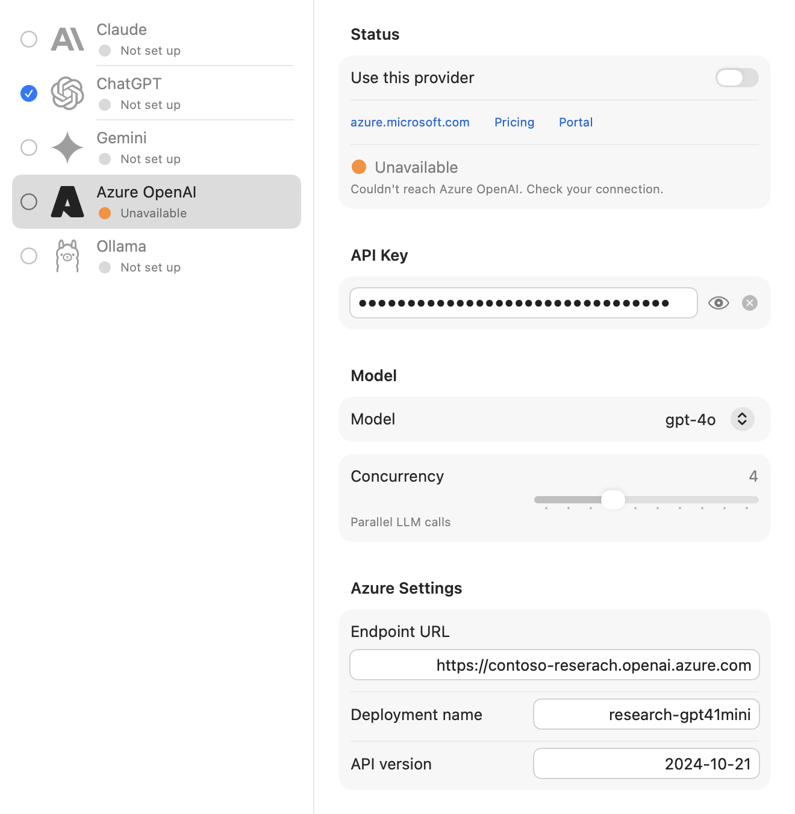

Unchanged by D4 as rendered: this is the “Unavailable” status, not “Invalid key”. The design lists host-not-found under D4; see question 2.
Framed boxes are the app's own views, rendered off-screen by AzureScenarioRenderTests (d4Label, wrongDeployment) with fake settings; only the words differ between today and proposed. Hatched boxes are commentary. Follows your light or dark setting. Nothing here is built; both are owner calls.
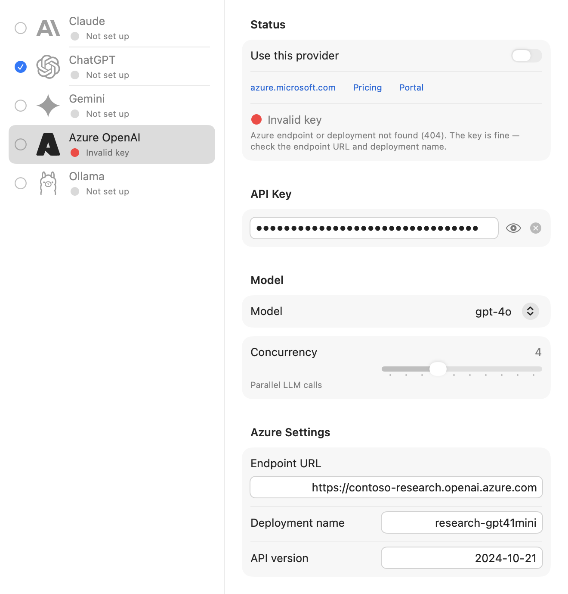
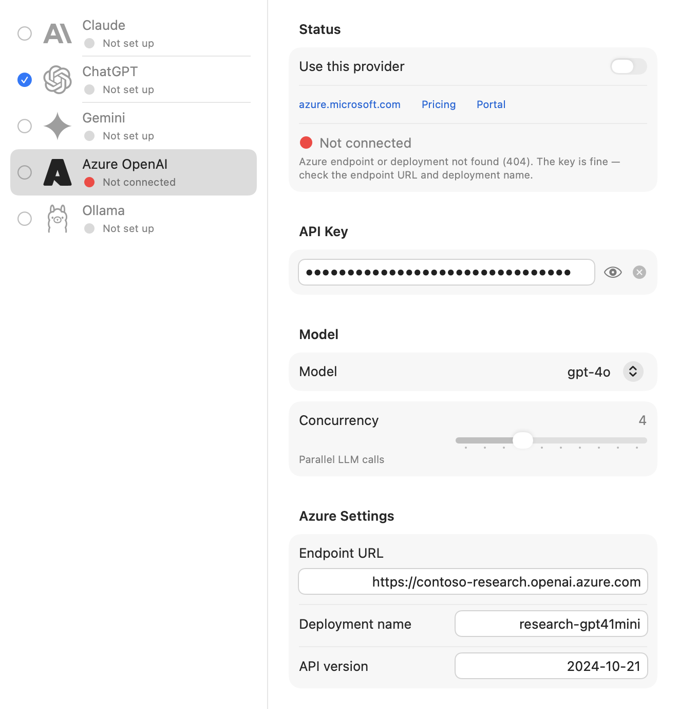
The case that started D4: the label says the key is bad, the sentence under it says the key is fine.
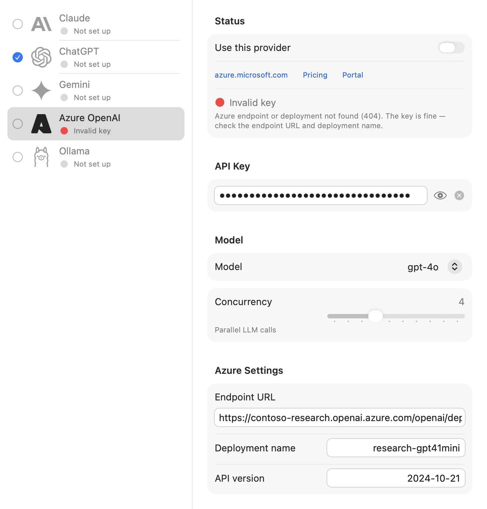
Same sentence, same contradiction. Azure answers a portal URL, a classic URL and an http endpoint the same way.
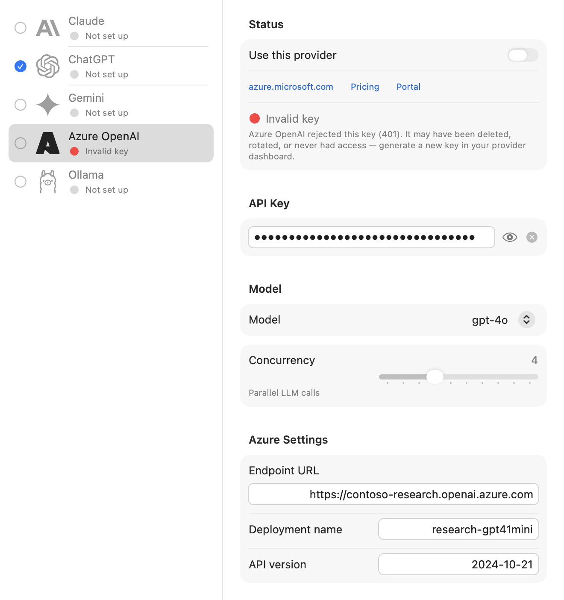
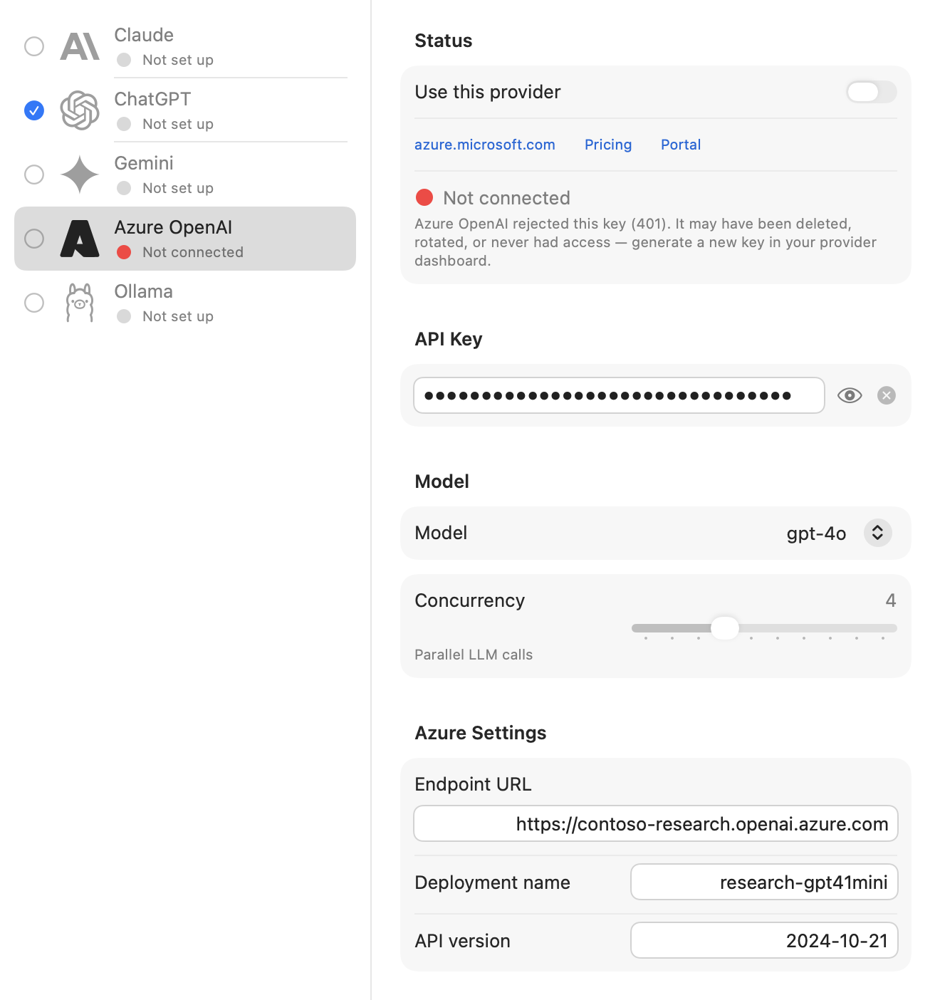
Included in D4 on purpose: Azure's own 401 says “invalid subscription key or wrong API endpoint”, so the key is never certain.
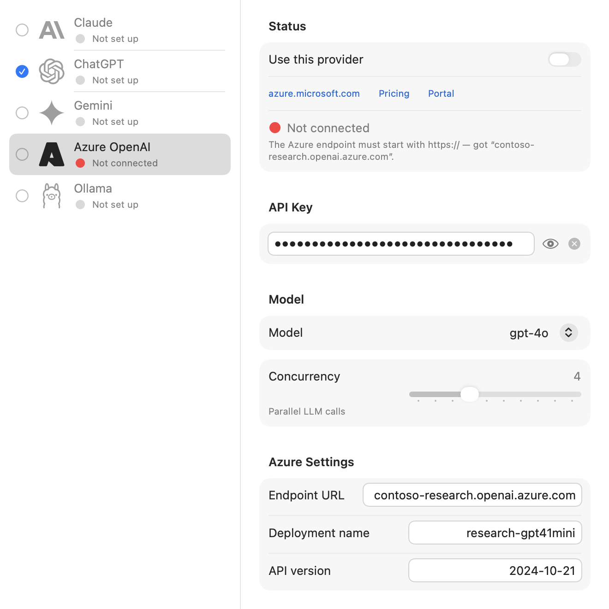
Decided before any request is sent; today it is also labelled “Invalid key”.

Unchanged by D4 as rendered: this is the “Unavailable” status, not “Invalid key”. The design lists host-not-found under D4; see question 2.
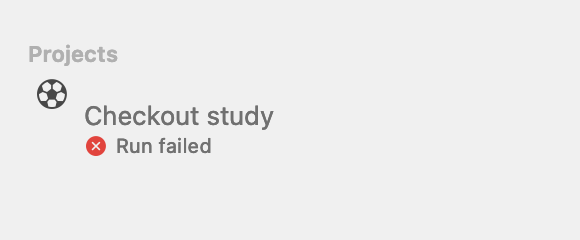

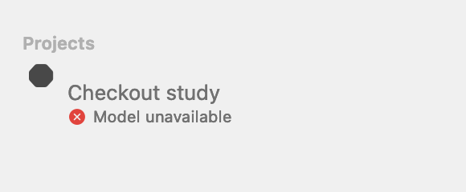
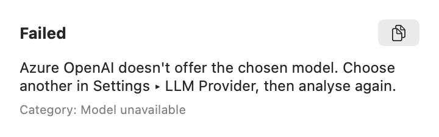
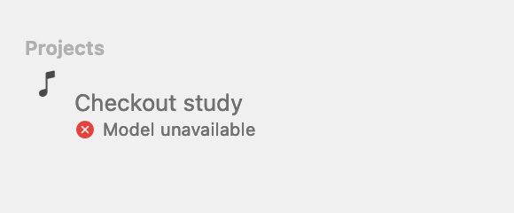
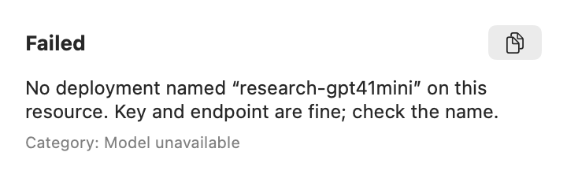
Why it says “Something went wrong” today. The pre-run check stops the run before its events log opens,
so the Mac sorts the failure from the printed output. The line reads Azure OpenAI rejected (Deployment
'research-gpt41mini' not found), the terminal wraps it after not, and no pattern in
PipelineRunner.categoriseFailure matches either form. A rejected key at the same check is already right
(“Your Azure OpenAI key was rejected.”).
Option A, no new words. One pattern, deployment '[^']*' not\s+found, sends it to Model unavailable.
The sentence is true but its remedy is for other providers: “Choose another” model, where Azure's fix is the
deployment name. It does point at the right Settings pane.
Option B, an Azure sentence. The same pattern, plus an Azure leaf at FailureMessage's
extension point using the design's sentence S2, with the name read from the line. One new key in 21 locales;
pairs with D4's string batch.
Either way the sidebar row still reads “Run failed” and the category under the sentence becomes “Model unavailable”. Neither needs Python changes. The fuller fix, the pre-run check writing a structured cause the Mac reads instead of the text, is a larger change and not drawn.
| Key | English | Needed by |
|---|---|---|
desktop.llmSettings.status.azureNotConnected (proposed name) | Not connected | D4 |
desktop.pipeline.failure.azureDeploymentNotFound (proposed name) | No deployment named “{{name}}” on this resource. Key and endpoint are fine; check the name. | Option B |
Proposal (
docs/design-azure-connection.md§6, L1): on any Azure failure the label reads Not connected instead of Invalid key. It is chosen from the failure's sentence key, soProviderStatusgains no case, the red dot stays, and other providers keep “Invalid key”. VoiceOver must speak the same label (ValidationAnnouncementbuilds it from the status alone today).Cost: one new key in 21 locales (frames here patch the English value for the render only).